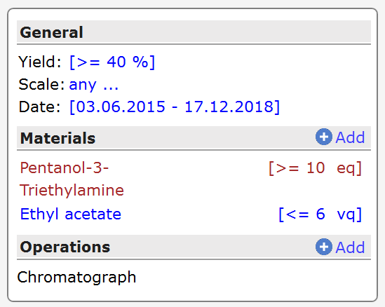
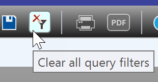
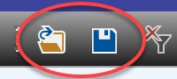
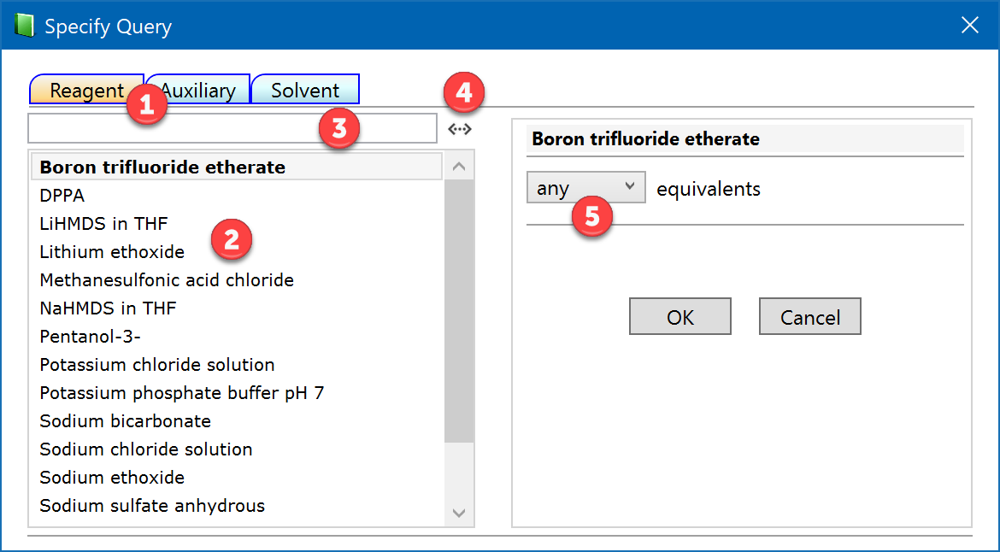

Experiment Properties Search
Introduction
Experiments not only can be searched by reaction substructure, but also according to following properties:
- by yield, scale and creation date,
- by utilized reagents, solvents and auxiliaries (and optionally their total equivalents)
- by operations like chromatograph, distill, etc.
These searches can be combined with Reaction Substructure Search for refining its results, but it can also be used standalone.
All specified criteria must concurrently match for a given experiment to provide a hit, unspecified ones are ignored. The queries are summarized in the property query box (left image). In its default state (right image) no filters are applied, as indicated by all criteria having 'any...' labels.
 
All query parameters can be reset by clicking the Clear all Query Filters button in the search section toolbar:

The search section toolbar also contains functionality for saving and loading your queries:

Yield, Scale, Date
The search criteria for experiment yield, scale and date are defined by clicking their adjacent 'any...' link, which is opening the dialog shown below. The dropdown menu within each category specifies the desired type of search, where 'at least' means larger or same, 'at most' means smaller or same, 'between' means larger or same as the first value and smaller or same as the second value. Select 'any' to reset an existing specification. No numeric field is present when the 'any' option is selected, 2 fields appear for 'between' and one field for all other cases.
The Date property relates to the experiment creation date. A calendar control lets you conveniently specify the desired date(s), with the current date being preselected by default.

Click OK when done, which transfers your query to the query summary box and immediately displays the corresponding search results.
Materials Search
Experiments can also be searched for utilized materials, i.e. reagents, solvents and auxiliaries, optionally in combination with equivalents: Molar equivalents for reagents (eq), volume equivalents for solvents (vq) and weight equivalents for auxiliaries (wq). If a specific material is utilized several times in a reaction, it's total equivalents are relevant for the query. Any number of materials can be specified, also multiple ones per category.
Click the "any" link of the materials part of the query summary to add a first material. This opens the dialog shown below:

Select the desired material type at the top of the dialog, i.e. reagent, auxiliary or solvent (1). This provides a list of all materials of the selected type so far utilized in your local experiments if in local search mode, or by all users present on the server if in server search mode (2). Please be aware that the server materials list may contain multiple names for the same material across the various users, since there may be synonyms, abbreviations, different spellings in different languages, but also typos, etc.
Typing a sequence of characters into the search box (3) filters the materials by the ones starting with these characters. However, if the substring button (4) is checked, all materials containing the entered character sequence anywhere inside their name are displayed. So if you are looking for a material containing bromine, you typically would activate the substring button and type 'bromo', which may also help to identify duplicate server material names.
The right part of the dialog provides the functionality to optionally specify required equivalents (5) of the selected material. This works in analogy to the specification of the yield and scale parameters described in the previous section. If the specified material is utilized multiple times per experiment, then its total equivalents are queried.
Finally click OK when done, which transfers your query to the query summary box and immediately displays the corresponding search results.